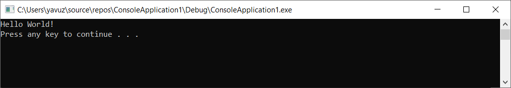

C++ Temel Kavramlar - I
C++ Program Yapısı
Her progralama dilinde olduğu gibi Hello World yazısı ile dilin yapısını inceleyelim.
#include ile C++ için gerekli olan kütüphane bilgileri tanımlanır. iostream kütüphanesi temel işlemler için gerekli bir kütüphanedir.
using namespace std; (std değiştirilebilir) Nesne yönelimli programlama için Namespace tanımlaması yapmak için kullanılır. İsteğe bağlıdır. Yukarıda tanımlanmazsa kullanılan method ile tanımlanır.
main (), program çalıştırmanın başladığı yerdir. Ayrıca tek satırlık yorumlar // ile başlar ve satırın sonunda durur.
Sonraki satır cout << “Hello World”; Ekranda Hello World yazısını göstermek için kullanılır.
Son olarak da return 0; programı sonlandırmak için dönüş değeri 0 girilip sonlandırılır.
Programın çıktısı şu şekilde olur;
Noktalı Virgüller ve Bloklar
C++’da ifadeler noktalı virgülle sonlandırılır. Yazılan her bir ifadenin sonuna noktalı virgül koymak gerekir.
Bloklar, süslü parantezler ile gösterilir ve mantıksal olarak kümelenmiş ifadeleri göstermek için kullanılır.
C++ Tanımlayıcılar
Bir C ++ tanımlayıcısı, bir değişken, işlev, sınıf, modül veya herhangi bir kullanıcı tanımlı öğeyi tanımlamak için kullanılan bir addır. Bir tanımlayıcı, A’dan Z’ye veya a’dan z’ye veya alt çizgi (_), ardından sayı, harf ve _ sembolleri olacak şekilde tanımlanır.
C ++, tanımlayıcılarda @, % gibi noktalama karakterlerine izin vermez. C ++, büyük küçük harf duyarlı bir programlama dilidir. sayi1 ile Sayi1, SAYI1 tanımlamaları aynı değildir.
C++ Anahtar Kelimeler
Aşağıdaki anahtar kelimeler C++ tarafından rezerve edilmiştir. C++’da tanımlayıcı yazarken bu anahtar kelimeler kullanılamaz.
| asm | else | new | this |
| auto | enum | operator | throw |
| bool | explicit | private | true |
| break | export | protected | try |
| case | extern | public | typedef |
| catch | false | register | typeid |
| char | float | reinterpret_cast | typename |
| class | for | return | union |
| const | friend | short | unsigned |
| const_cast | goto | signed | using |
| continue | if | sizeof | virtual |
| default | inline | static | void |
| delete | int | static_cast | volatile |
| do | long | struct | wchar_t |
| double | mutable | switch | while |
| dynamic_cast | namespace | template |